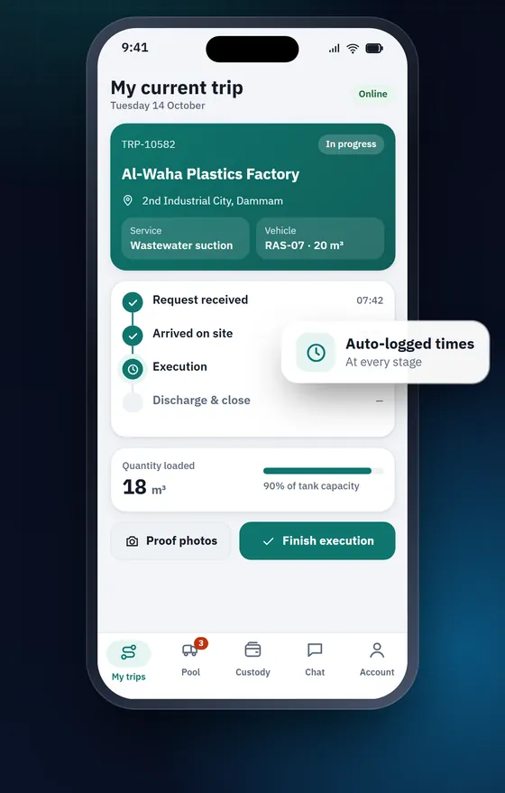
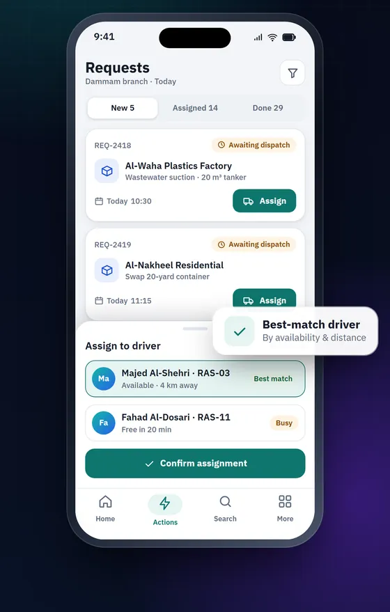
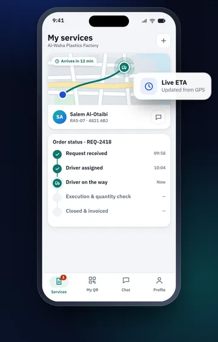
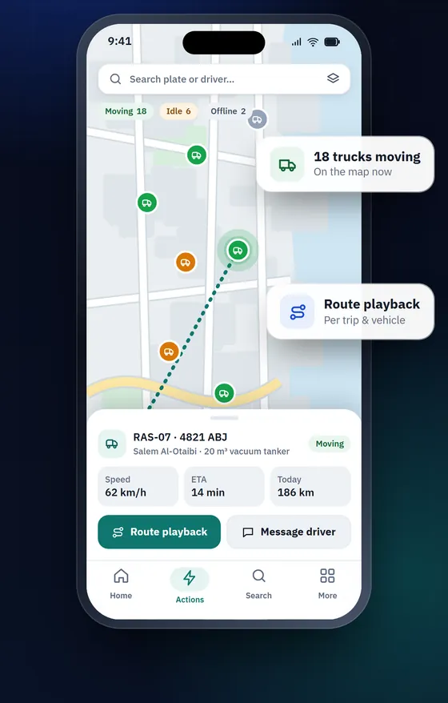
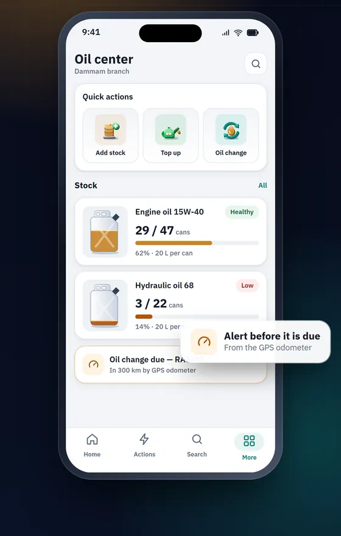
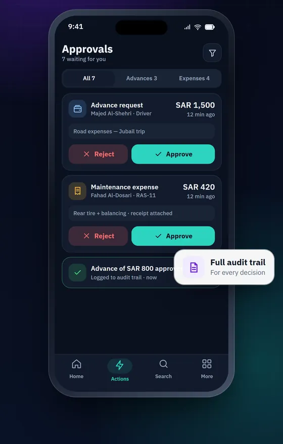
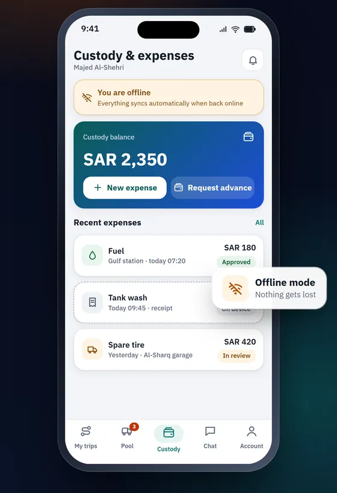
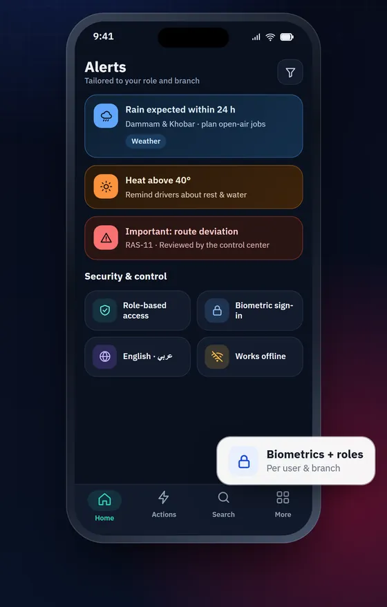
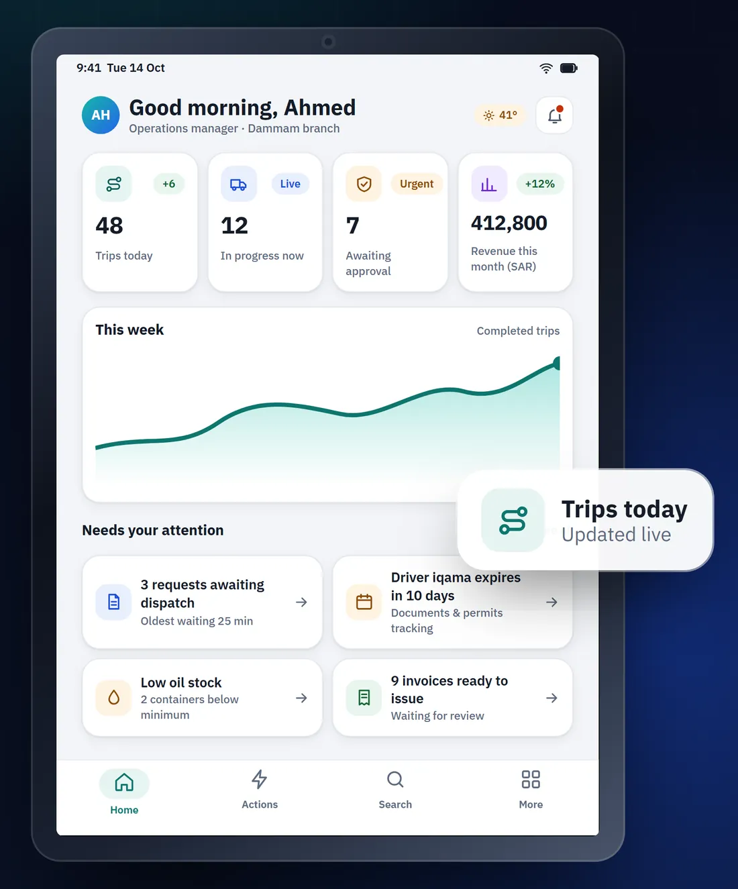

Every field operation, under control — live.
ZORA 360 is one platform for field-service and fleet operations — from receiving a client request and dispatching the right driver and vehicle, to executing and proving every trip, approving expenses and reporting to management — with precise access for every role and branch.
Available now on the web · iPhone, iPad and Android apps in preparation
One operating loop — from request to report.
Instead of scattered spreadsheets, chat groups and lost paperwork, ZORA brings operations into one system shared by managers, supervisors, drivers and clients — each according to their role — so errors drop, accountability is clear and every action is traceable.
- 01
Request
A client or team raises a service request with full details.
- 02
Dispatch
The request is assigned to a driver or sub-contractor and a vehicle.
- 03
Execute
The driver works the trip step by step, recording quantities on site.
- 04
Prove
Before/after photos and QR confirmation with the client close the job.
- 05
Approve
Expenses and requests are reviewed and approved by authority.
- 06
Report
Dashboards and reports show performance and cost per branch.
Built for the reality of field operations.
Every image below is a real ZORA screen.
Every trip, step by step.
Drivers see exactly what the current job is: client, site, service type and vehicle. Each stage is time-logged, the quantity handled is recorded on site, and the job closes with photo evidence and a QR confirmation from the client’s site worker.
- Time-logged trip stages
- Before/after proof photos from the site
- QR confirmation printed on the service note


From request to driver in a few taps.
Client requests land in one queue organised by status. Approve or reject, assign a driver or sub-contractor and a vehicle, complete with quantities and photos, or cancel with a reason — while the client follows every job from their own portal.
- One queue from creation to invoicing
- Assign drivers, sub-contractors and vehicles
- Client portal for requests, history and reports


Know where every vehicle is.
A live map of the fleet with speed and status for each vehicle, route playback per trip, geofences and zones — connected to the fleet’s telematics. For treatment and disposal, ZORA reconciles GPS visits to treatment facilities with the executed trips.
- Live positions, speed and status
- Route playback, geofences and zones
- GPS evidence of treatment-facility visits

Maintenance and stock under control.
A complete record for every vehicle: maintenance, tyres, oil changes, parts and cost per vehicle, plus the fleet’s oil stock per branch with purchases, dispensing and transfers — keeping vehicles on the road, not in the workshop.
- Maintenance history and cost per vehicle
- Oil stock, dispensing and transfers per branch
- Vehicle documents and permit expiries

Decide wherever you are.
Advances, expenses and maintenance requests arrive in one inbox with their receipts, ready to approve or reject in seconds. Every decision is written to the audit trail, and each user sees and does only what their role and branch scope allow — enforced on the server, not just hidden in the interface.
- One approvals inbox with receipts attached
- Full audit trail for every decision
- Permissions by role, module and branch

Expenses with receipts — even offline.
Drivers log expenses and attach receipts from the field with a live custody balance. If the network drops, entries are kept on the device and sent automatically when the connection returns. Customer invoices, credit notes, payroll and payslips, accounting period lock and serial document numbering are built in.
- Custody, advances and settlements
- Customer invoicing, credit notes and payroll
- Accounting period lock

Smart alerts, built-in conversation.
Per-branch weather warnings, document and permit expiries and requests awaiting your decision — routed by role and branch. Built-in chat and voice calls keep the team and drivers talking about the job itself, without third-party messaging apps.
- Alerts routed by role and branch
- Internal chat and voice calls
- Weather and heat alerts per branch

Your entire operation, at a glance.
Today’s trips, trips in progress, items awaiting approval and revenue — live and per branch. From the cockpit you jump straight to what needs attention, and on to detailed reports with Excel and PDF export.
- Live indicators per branch
- A “needs your attention” list
- Services, drivers, financial and sub-contractor reports

Speaks the language of waste-service operators.
ZORA was built by S-TRADIX around wastewater transport, container swaps and treatment operations — so the concepts you work with every day are native to the system, not an afterthought.
Wastewater suction
Tanker trips with the quantity loaded recorded on site.
Container swaps
Container delivery, collection and swap history, with overdue alerts per contract.
Treatment & disposal
Treatment companies and contracts, with GPS evidence of facility visits tied to trips.
Verified proof of service
Photos, QR confirmation and publicly verifiable service notes and waste manifests.
Everything an operator runs on.
Government permits and gate passes, document authentication, budgets per client and an operations copilot — in the same system, with the same permissions.
Permits & gate passes
Iqamas, operating cards, vehicle and material permits and gate passes, with expiry alerts.
Document authentication
Authenticated agreements and documents with QR links anyone can verify.
Client budgets
Budgets per client by service, optionally shared with the client in their portal.
Operations copilot & invoice reading
Ask questions in Arabic or English, and read expense invoices automatically — processed on S-TRADIX servers.
Every branch in its lane — head office sees it all.
- Master adminSees every branch and manages shared settings.
- Branch adminWorks within their own branch’s data.
- Sub-adminModule-level permissions, precisely scoped.
- DriverTheir own trips, expenses and custody.
- Client userFollows their organisation’s requests and services.
Where ZORA 360 is available today.
The web platform is available to our customers now. The iPhone, iPad and Android apps are being prepared for release and will be announced on the App Store and Google Play once published.
- Web Available now
- iPhone In preparation
- iPad In preparation
- Android In preparation
Enterprise controls, from the ground up.
Audit trail
Every change and approval, recorded with before and after values.
Branch scope
Data scope is enforced on the server.
Period lock
Closed accounting periods stay closed.
Arabic & English
Full interface in both languages and directions.
See ZORA 360 in your own operation.
Tell us about your fleet and the services you run, and our team will get in touch to arrange a walkthrough.
ZORA 360 is owned and published by S Tradix LLC.